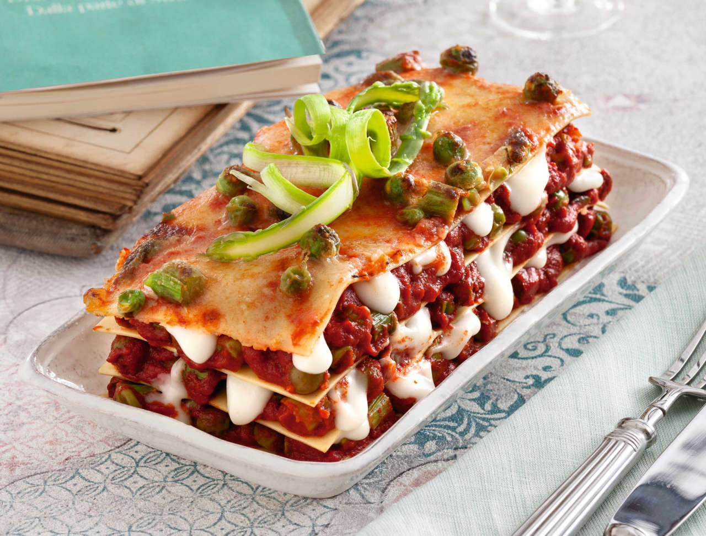

Home
Lasagna Rossa

Descrizione
Lasagna Rossa al Ragù della Tradizione
Un grande classico intramontabile della cucina italiana, ricco e avvolgente. Sottili sfoglie di pasta fresca all'uovo si alternano a un ragù di carne cotto lentamente a fuoco dolce, reso cremoso da una besciamella fatta in casa profumata alla noce moscata. Il tutto è completato da una generosa spolverata di Parmigiano Reggiano stagionato che, in forno, crea una crosticina dorata e irresistibile. Un piatto generoso dal cuore morbido e filante, perfetto per celebrare i pranzi in famiglia e le occasioni speciali.
Ingredienti
- 500g di sfoglie di pasta fresca all'uovo
- 400g di carne macinata mista (manzo e maiale)
- 1 cipolla
- 1 carota
- 1 gambo di sedano
- 500ml di passata di pomodoro
- 250ml di besciamella
- 100g di Parmigiano Reggiano grattugiato
- Olio extravergine d'oliva
- Sale e pepe q.b.
- Noce moscata q.b.
Preparazione
- Preparare il ragù: tritare finemente cipolla, carota e sedano e soffriggerli in olio extravergine d'oliva. Aggiungere la carne macinata e rosolare bene.
- Unire la passata di pomodoro, salare, pepare e cuocere a fuoco lento per almeno un'ora, mescolando di tanto in tanto.
- Preparare la besciamella: in un pentolino sciogliere il burro, aggiungere la farina e cuocere per un paio di minuti. Versare il latte caldo a filo, mescolando continuamente fino a ottenere una crema liscia. Aggiustare di sale e noce moscata.
- Assemblare la lasagna: in una teglia, alternare strati di pasta, ragù, besciamella e Parmigiano grattugiato, terminando con uno strato di besciamella e Parmigiano.
- Cuocere in forno preriscaldato a 180°C per circa 40 minuti, fino a ottenere una superficie dorata e croccante.
- Lasciare riposare qualche minuto prima di servire.